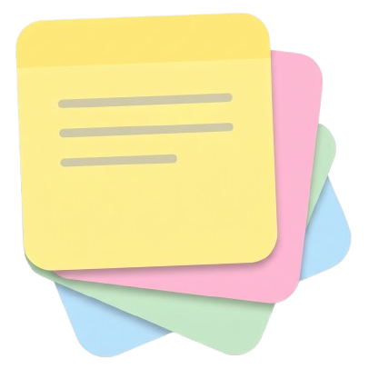

Stikly
⬆ New version available
Auto
☀
☾
⚙
Your notice board
My notes
+ New note
Import…
Open folder
Search inside notes
Sort: Recent
Sort: Name
Sort: Color
Board
List
Click a note to open it · Shift + click to open it without closing this panel
Notify me about new versions
Later
Download…
Installer
Download
Portable
Download
Close
Settings
Start Stikly with Windows
When Stikly starts, open…
The “My notes” panel
The notes I had open
Only the notes marked 🚀 (mark them in the panel)
Global shortcut for a new note
Close